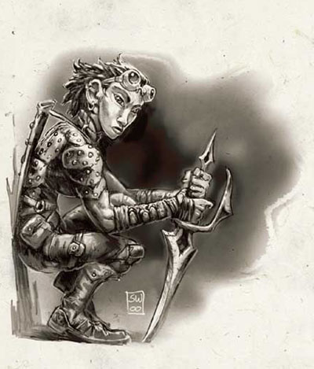

工会盗贼是城市区域中盗贼工会组织的成员。他们操纵并控制了势力范围之内绝大多数的犯罪活动。工会盗贼们通常分属各种不同的部门（刺杀、行乞、赏金猎人、抢劫、诈骗、扒手、讨债、勒索、刺探情报、赃物交易、走私），每个部门都由一个专门的领导人负责此类型的犯罪活动。所有部门的领导人则都向公会的首领负责。工会中的盗贼通常都只知道自己的下属、同事、以及顶头上司的身分－盗贼工会用如网状般重迭的秘密来保护自己，如此一来，被掳获或变节的成员便只能出卖极少数的其他成员。
绝大多数的工会盗贼都出身于普通盗贼，不过某些部门的工作也适合由战士与游侠担纲。邪神的牧师（尤其是麦斯克与莎儿的信徒）时常出现在各个部门之中，而术士与法师通常也在工会中占有一席之地－不过这点要视各地的情况而有所不同（有的地区较缺乏秘术施法者，或是当地风俗反对这些人藉由这种方式发展力量）。工会盗贼擅长与他人共同行动、胁迫一般市民、执行拷问、以及打通门路。
生命骰：1d6
职业条件：
技能：收集讯息3级 Gather Information，躲藏8级 Hide，胁迫3级 Intimidate，潜行3级 Move Silently
特殊：必须是盗贼工会的成员
职业技能：
以力量为关键属性者：攀爬 Climb，跳跃 Jump
以敏捷为关键属性者：解除装置Disable Device，潜行 Move Silently，开锁 Open Lock，偷窃 Pick Pocket，绳技 Use Rope
以智力为关键属性者：估价 Appraise，手艺 Craft，伪造文书 Forgery，地区知识 Knowledge（Local），搜索 Search
以智慧为关键属性者：暗语沟通 Innuendo，聆听 Listen，专业 Profession，察言观色 Sense Motive，侦查 Spot
以魅力为关键属性者：欺骗 Bluff，交涉 Diplomacy，胁迫 Intimidate
每级技能点数：6+智力调整值
职业特性：
擅长武器与防具 Weapon & Armor Proficiency：
工会盗贼擅长所有的简易武器与轻型防具。
偷袭伤害 Sneak Attack：
第1级起，工会盗贼可以造成偷袭伤害1d6，此能力可与其他职业得到的偷袭伤害累计。第3级与第5级时再+1d6。
如簧之舌 Doublespeak：
第1级起，工会盗贼的欺骗、交涉、以及胁迫检定都得到+2奖励。
奖励专长 Bonus Feat：
第2与第4级时，工会盗贼可从下表中选取一个奖励专长：警觉、盲战、世界主义者 Cosmopolitan（文末注明）、教育背景 Education、擅长奇特武器（单手十字弓）、领导力、快速反射、追踪、专攻技能（任一工会盗贼职业技能）、省略手势、街巷传闻 Street Smart（文末注明）、称手武器、专攻武器。
直觉闪避 Uncanny Dodge：
第2级起，工会盗贼获得直觉闪避能力，此能力与一般盗贼的能力相同。如果该角色先前已有可得到此能力的其他职业，则可以将工会盗贼的职业等级与该职业的等级累加，以决定该角色的直觉闪避能力。举例来说，一位职业为5级盗贼/2级工会盗贼的角色，其直觉闪避的能力与7级盗贼相同。
领导力提升 Reputation：
第3级起，工会盗贼的领导力点数可以得到+1奖励（详见DMG城主手册）。大多数对招集追随者有兴趣的工会盗贼通常在城市中都会有一个活动基地，此基地可以给予领导力调整值+2的奖励（详见DMG表2-26）。第4级与第5级都再+1。
附表：工会盗贼
等级 基本攻击加值 强韧／反射／意志豁免加值 职业特性
1 +0 +0／+2／+0 偷袭伤害+1d6，如簧之舌
2 +1 +0／+3／+0 奖励专长，直觉闪避
3 +2 +1／+3／+1 偷袭伤害+2d6，领导力提升+1
4 +3 +1／+4／+1 奖励专长，领导力提升+2
5 +3 +1／+4／+1 偷袭伤害+3d6，领导力提升+3
附注：FR特殊专长
世界主义者 Cosmopolitan [一般专长]
描述：你对城市中无数大街小巷的探索使你学到了许多原先你不明了的事物。
可选地区：安姆 Amn、深水城 Waterdeep
效果：选择另外一个你没有的技能作为职业技能。你在检定这个技能时得到+2的奖励，这个技能将永久被视为你的职业技能。
特殊：你可以选择这个专长多次。它带来的效果不能迭加。每次你选择它的时候，必须选择应用到一个新技能上。
街巷传闻 Street Smart [一般专长]
描述：你已经学会如何获得资讯、提问、以及和黑社会打交道而不引起他们的怀疑。
可选地区：安姆 Amn、卡历珊 Calishan、切森塔 Chessenta、月之海 Moonsea、乌瑟 Unther
效果：你在所有欺骗和搜集讯息的技能检定获得+2奖励。